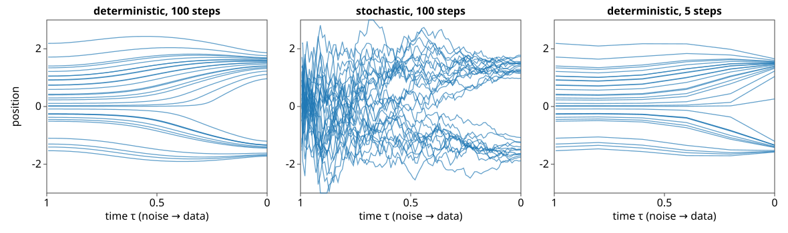
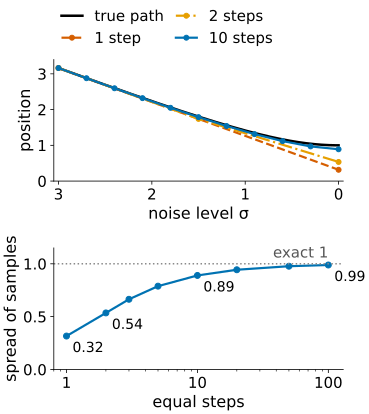
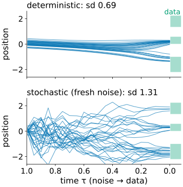
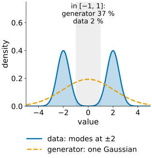

How do we get from noise to an image, how many steps does it take, and how do we know the samples are any good?
Two ways down: a stochastic path (denoise, add back a little fresh noise) and a deterministic path (follow the arrows). Same destinations, different paths.
Too few steps cut corners: samples pulled to averages, too little spread. Where the steps go matters as much as how many.
Fresh noise forgets errors in the position; a deterministic sampler is an invertible map (inversion).
Judging generated images as a distribution: precision, recall, a Fréchet distance, and a memorisation check.
Slides titled The math give the formulas and proofs; the ideas are complete without them.
From Diffusion models and generated detail: start from pure noise; at each step estimate the clean image, move towards it, and continue at a lower noise level. Too few steps land between the blobs.
Two ways down, same destinations
Deterministic: at every noise level, move along the arrows of the denoiser and nothing else. Smooth paths; the same start always gives the same image.
Stochastic (ancestral): denoise a little more than needed, then add back fresh noise. Jittery paths.
At every noise level both have the same distribution of points; only single paths differ. A knob η runs between them: 0 = deterministic, 1 = ancestral.

Try it: paths through the noise levels
The math: an ODE and an SDE
Noise-level form \mathbf x = \mathbf x_0 + \sigma\boldsymbol\varepsilon, density p_\sigma (data blurred by a Gaussian of width σ). Two processes have exactly these marginals as σ falls from \sigma_{\max} to 0:
with D(\mathbf x, \sigma) = \mathbb E[\mathbf x_0\mid\mathbf x] = \mathbf x + \sigma^2\nabla\log p_\sigma the denoiser. Both follow from the heat equation \partial_\sigma p_\sigma = \sigma\,\Delta p_\sigma (Fokker–Planck; stated, not derived): the ODE moves probability along the arrows, the SDE moves twice as far along them and diffuses back by the same amount.
Gaussian data\mathcal N(0, s^2): D = \frac{s^2}{s^2+\sigma^2}\mathbf x, so \frac{dx}{d\sigma} = \frac{\sigma\,x}{s^2+\sigma^2} and x(\sigma) \propto \sqrt{s^2+\sigma^2}: each path is scaled down smoothly, from spread \sqrt{s^2 + \sigma_{\max}^2} to s.
Why steps matter
Each step follows the arrows in a straight line, but the true paths bend, most near the data at low noise.
Gaussian data with sd 1, start at noise level σ = 3 (spread \sqrt{10} = 3.16):
one deterministic step to σ = 0 lands at the denoiser’s answer: spread 0.32;
two steps (3 → 1.5 → 0): 0.54; with the middle step at σ = 1 instead: 0.63;
ten equal steps: 0.89; a hundred: 0.99. The exact answer is 1.
Too few steps: samples land on averages and have too little spread. With several modes, samples fall between them.
Cost is counted in network evaluations. Practice reaches a few to tens by better step placement, two-stage steps, or training a student network to jump (distillation).

The math: one step is an Euler step
From the introduction, with \hat{\mathbf x}_0 = (\mathbf x_i - \sqrt{1-\bar\alpha_i}\,\hat{\boldsymbol\varepsilon})/\sqrt{\bar\alpha_i}, the deterministic step is \mathbf x_{i-1} = \sqrt{\bar\alpha_{i-1}}\,\hat{\mathbf x}_0 + \sqrt{1-\bar\alpha_{i-1}}\,\hat{\boldsymbol\varepsilon}. Divide by \sqrt{\bar\alpha_{i-1}} and write \mathbf y = \mathbf x/\sqrt{\bar\alpha}, \sigma = \sqrt{(1-\bar\alpha)/\bar\alpha}:
since \hat{\boldsymbol\varepsilon} = (\mathbf y_i - \hat{\mathbf x}_0)/\sigma_i: an Euler step of the probability-flow ODE. The stochastic step of the introduction is the same move plus Gaussian noise; with a weight η on the added variance, c^2 = \eta^2\sigma_{i-1}^2(\sigma_i^2 - \sigma_{i-1}^2)/\sigma_i^2:
η = 0 deterministic, η = 1 ancestral. Euler for Gaussian data: one step from σ to 0 multiplies by s^2/(s^2+\sigma^2); from σ to σ′ by 1 - (\sigma - \sigma')\sigma/(s^2 + \sigma^2). For s = 1, 3 → 1.5 → 0: (1 - 1.5\cdot 0.3)\cdot\frac{1}{3.25} = 0.169, times 3.16 = 0.535.
Fresh noise forgets: an error in the position (a bad start, a too-large step) is partly washed out by the noise added later, and the following steps pull the point back to the right distribution. The price: it needs more steps for the same accuracy. It does not fix a wrong denoiser.
Extra correction steps at a fixed noise level (Langevin: a small step along the score plus a little noise) form a random walk that keeps the distribution (see also MCMC, if you took that day).
Deterministic sampling is a map noise ↔︎ image, invertible: run it backwards from a real image to find “its” noise (inversion), then edit or interpolate there and run forwards again. Unlike the VAE’s encoder, nothing was trained for the way back.

Judging generated images: a distribution
No single generated image is right or wrong. Compare the cloud of samples with the cloud of real (held-out) images.
Precision: the fraction of samples that lie where real images lie (realism). Recall: the fraction of real images that have samples nearby (coverage). Neighbourhoods: a ball around each point reaching its k-th nearest neighbour.
Fréchet distance: fit one Gaussian to each cloud and compare means and covariances. Image papers compute it on features of a pretrained network (called FID). It is blind to everything a Gaussian cannot see: data at ±2 (sd 0.5) and a generator \mathcal N(0, 4.25) have Fréchet distance 0, yet 37 % of its samples fall in [-1, 1], where only 2 % of the data are.
Memorisation: distance from each sample to its nearest training image. Copies score well on everything else (recall leakage: training images are no evidence of generalisation).

The math: precision, recall and the Fréchet distance
Real points R, generated points G; r_k(\mathbf a) = distance from \mathbf a to its k-th nearest neighbour in its own set.
\text{precision} = \frac{1}{|G|}\sum_{\mathbf g\in G}\big[\exists\,\mathbf r\in R: \|\mathbf g - \mathbf r\| \le r_k(\mathbf r)\big],\qquad \text{recall: swap } R \text{ and } G.
Fréchet distance between \mathcal N(\boldsymbol\mu_1, \Sigma_1) and \mathcal N(\boldsymbol\mu_2, \Sigma_2):
In 1D: (\mu_1-\mu_2)^2 + s_1^2 + s_2^2 - 2s_1s_2 = (\mu_1-\mu_2)^2 + (s_1-s_2)^2. Spreads 0.316, 0.535 and 1 against sd 1: d^2 = 0.468, 0.216, 0.
Try it: four ways to fool a metric
For science: evaluate the measurement you will make
Image-level metrics compare generic features; a biologist needs the readout: compare the histograms of nucleus area, cell counts, intensities between generated and held-out real images.
A generator can match the Fréchet distance and still get a rare phenotype’s frequency wrong (the rare blob of the introduction: 5 % of the data, 1 % of the samples with a briefly trained network).
Always also check memorisation: nearest training images next to the “new” ones.
Summary
Deterministic and stochastic samplers share the distribution at every noise level; paths differ. Deterministic = Euler steps of an ODE; stochastic adds fresh noise.
Too few steps cut the corners of curved paths: samples too narrow, between modes. Step placement matters as much as number.
Fresh noise forgets errors in the position; deterministic sampling can be inverted.
Judge generated images as a distribution: precision (realism), recall (coverage), Fréchet distance (Gaussian summary, blind to shape), nearest-training distance (memorisation), and the readout you care about.